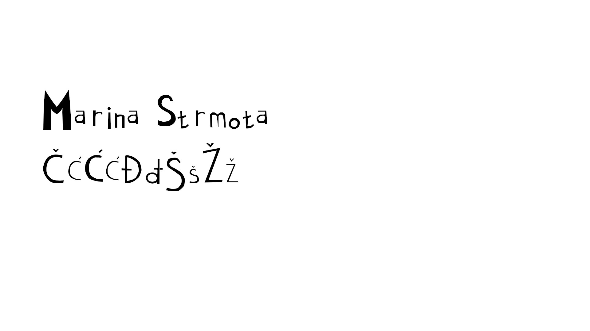
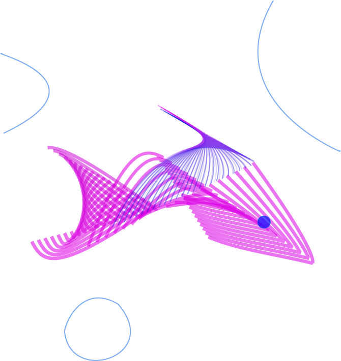
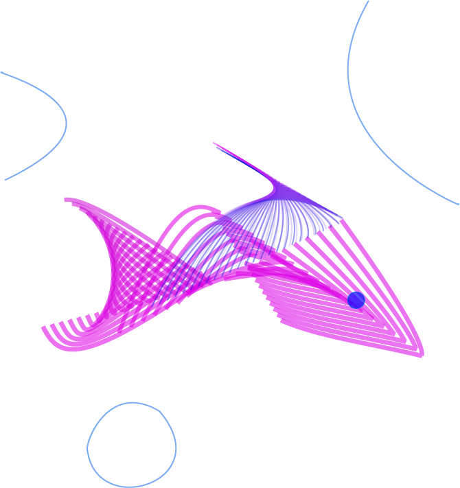
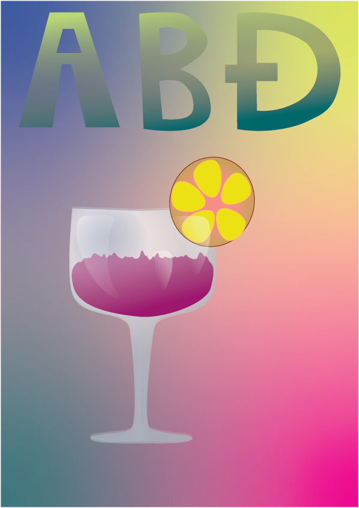
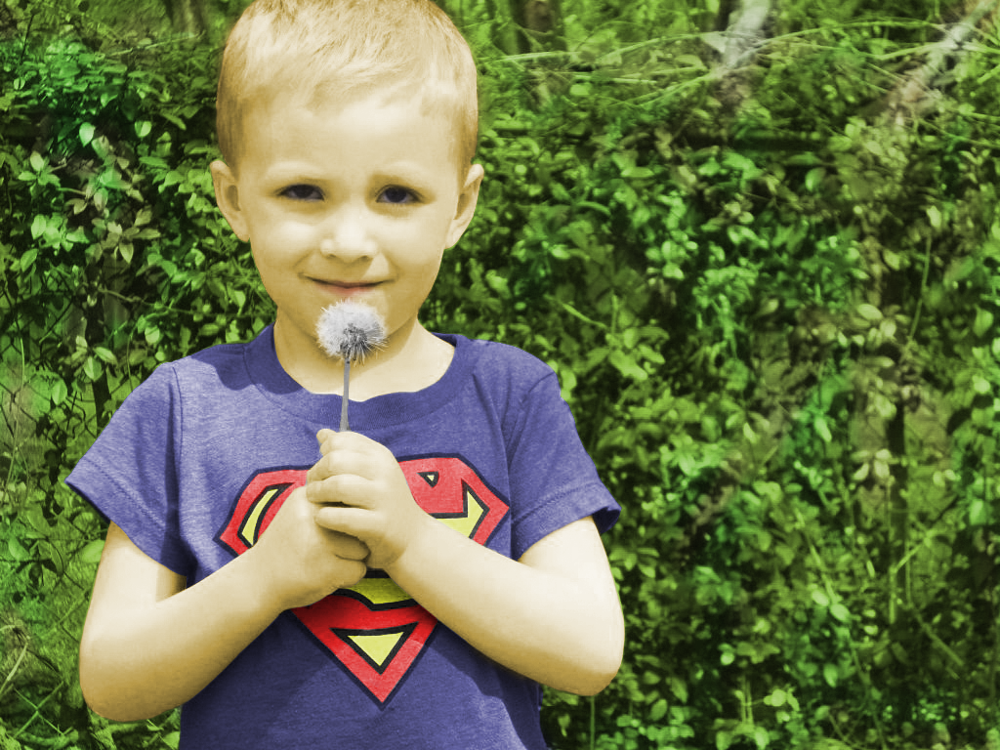

U ovoj vježbi sam izradila vlastiti tekst u programu Fontforge. Naučila sam konstruirati konture slove i stavljati ih unutar tzv. "četverca."
U slj. vježbi napravila sam svoje inicijale, pretvarajući tekst u objekte, pomoću Bezierovih krivulja, te sam pomoću funkcije interpolacije ispunila te inicijale. Definirala sam sivi ton za ispunu i obrub objekata te debljina linije.
 

U ovoj vježbi sam crtala oblike prema pred predlošku "tracing" te njihovom transformacijom poput zrcaljenja i transformacije.


U ovoj vježbi sam pomoću metoda spajanja ili tzv. compound path izrađivala složene objekte te sam primjenjivala različite gradijente.

U ovom sam projektu sam kombinirala različite metode zrcaljenja, gradijenata i transparencije te sam koristila različite elemente na zadanom predlošku i dobila konačan rezultat.

U ovoj vježbi naučila sam uređivati fotografije sa raz. tehnikama obrade. Koristila sam brisanje, koloriranje, brisanje neželjenih dijelova fotografije i dodavanje novih elemenata.

U ovoj vježbi sam pomoću tehnike prebacivanja crno-bijele fotografije u obojenu izrađivala za svaki dio "layer mask" i bojila ih u potrebne boje.

U ovoj vježbi sam izrezivala različite dijelove fotografija i stavljala i ih u jednu kompoziciju. Koristila sam "lasso tool" i selektiranje preko kanala ili crtanja u tzv. quick mask mode us pomoć "brush eraser alata" da bi izrezala željene objekte.

Na temelju prijašnje vježbe napravila sam fotografiju koristeći tehnike, fotomontaže, retuširanja i koloriranja.

U ovoj vježbi sam izradila kinemagraf, odnosno GIF. Pomoću isječka iz videozapisa u Davinchi Resolve-u uzela sam "still" fotografije koju sam exportala u Adobe Photoshop. Na taj still fotografije napravila sam transparentnu masku nad određenom objektu na fotografiju. Nakon toga sam obrađenu fotografiju vratila nazad u Davinchi Resolve i spojila tu fotografiju s videozapisom da bi dobila GIF.


U ovoj vježbi sam u programu Davinchi Resolve izradila videozapis pomoću dva video isječka. Međusobno sam ih spojila i dodala zvuk koristeći brojne efekte, npr. Fade in/Fade out, usporavanje te transformacije boja, rotacija. Dodala sam statični i pomični tekst i njih editirala da se uklope u videozapis.